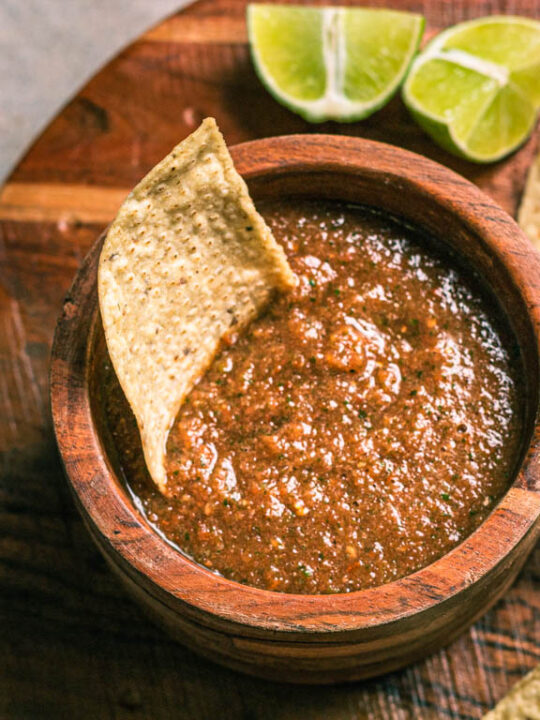

Fire Roasted Salsa

Description
This is my go to appetizer when I barbecue because I already have a fire going for it, and it brings out so many different
flavors. It's a great way to make a distinguished salsa that will have people begging for your recipe! Recipe by Colton Shirley
Things You'll Need
- 5 to 6 Roma tomatoes
- 1 white onion
- 1 bundle of Cilantro
- 3 Jalapenos
- 1 Bell pepper
- 1 Anaheim pepper
- 1 1/2tbsp. Salt
- 1tbsp. Black pepper
- 3/4tbsp. Cumin
- 1tbsp. Garlic powder
- 1/2tbsp. Olive oil
- 1/2 Cup of vinegar
Let's Get Cookin'
- The first thing we'll need to do is either build a fire or start your gas grill. I don't recommend using this recipe on a stove.
- After we have a fire going, we'll need to prep our veggies for cooking. Take your white onion and remove the first layer of skin,
then cut the eye and the root of the onion off. after that, cut the onion in half.
- Before grilling, I like to wash my tomatoes. start come cold water and put your tomatoes in a bowl. Add about 2 cups of water from tap
to your bowl of tomatoes and then add your half cup of vinegar.
- Now we should be ready to get these on the grill! Throw the onion, tomatoes, jalapenos, bell pepper and Anaheim pepper on the grill.
cook the onions until lightly browned. The Anaheim pepper, bell pepper and jalapenos should get a nice char on the skin before it needs
to be removed from heat. Cook the tomatoes until the skin begins to separate.
- Now that our vegetables are done cooking, we're ready to prep for the food processor/blender. On a cutting board, put your bell pepper,
Anaheim pepper and jalapenos. cut the tops of the jalapenos off and squeeze the seeds out of 2 of the 3. Do the same to the Anaheim pepper,
and cut the top off the bell pepper and take the core out.